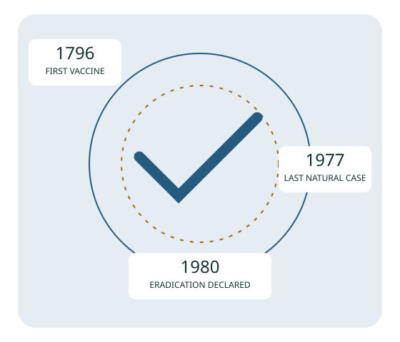

Smallpox. A disease the world ended.
Follow the story of the first vaccine and the only human disease eradicated worldwide. Eight source-linked lessons, quizzes, and a timeline explain the science and the people behind that achievement.
Milestones: WHO

Eight lessons, start to finish
Read them in order or jump to what interests you. Your progress is saved on this device.
Module quizzes
Each quiz gives instant feedback and an explanation for every answer. Your best score is saved.
A timeline of smallpox
Key dates in prevention, vaccination and eradication. The larger dots mark turning points.
My progress
Tracked privately in your browser — nothing is uploaded anywhere.
Why this guide exists
Smallpox Learn is a companion to Measles Learn, and a starting point for a wider collection about vaccine-preventable diseases. It explains smallpox in plain language, with references linked alongside the lessons.
The guide distinguishes natural transmission from laboratory-associated cases, historical vaccines from current products, and evidence from uncertainty. Reflection prompts invite discussion; they are not factual claims.
Author & adaptation
Created for René F. Najera, DrPH, using the MIT-licensed Measles Learn framework. Content reviewed against the linked sources on 6 October 2026.
Check the evidence
Read the organized source list, including notes on uncertainty and vaccine product differences. You can print it or save it as a PDF using your browser.